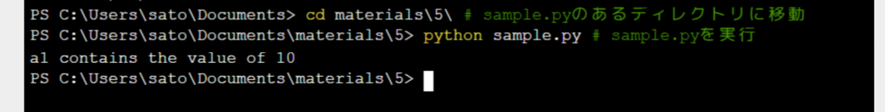
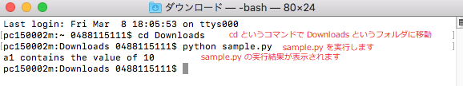

▲Pythonスクリプトとコマンドライン実行¶
Pythonスクリプトとコマンドライン実行について説明します。
参考
実は、第4回で紹介したモジュールファイル（拡張子 .py）は、それ単独で直接実行可能な自己完結したプログラムです。 直接実行されるPythonプログラムコードのことを指して特に、Pythonスクリプトと呼びます。 モジュールかスクリプトかを区別しないときには、Pythonソースファイルや .py ファイル等と呼ばれます。
たとえば、次のコードセルを実行してみてください。
[1]:
a1 = 10
print('a1 contains the value of', a1)
a1 contains the value of 10
この内容と全く同じコードを記述したPythonスクリプトファイル sample.py を教材として用意しました。
オペレーティングシステム（実際にはシェル）から sample.py を実行するには、以下のようにします。
>>> python sample.py
あるいは
>>> python3 sample.py
ここで、>>> は、シェルのプロンプト（コマンド入力を促す記号）を意味します。 後に示す具体例を見るとわかるように、環境によっては > であったり、$ であったりします。
このようにスクリプトをシェルから実行することを、コマンドライン実行と呼びます。
コマンドライン実行の具体例¶
sample.py をコマンドライン実行する具体例を、実行環境毎に説明します。
Jupyter Notebook での実行方法¶
ファイルマネージャ画面で、
New ⇒ Terminal
を選択すると、ターミナルのタブが生成されます。

Windows 10 の環境（ユーザーアカウント名 sato）では、次のように表示されます。

次の例では、cd コマンドで sample.py が存在するディレクトリ materials/5/ に移動し、その上で sample.py を実行しています。

Jupyter Notebook 上で開かれるターミナルは、環境によって違います。 デフォルトでは、Windows 10 ではPowerShellが起動し、macOSならばbashが起動するでしょう。
Windowsでの実行方法¶
以下をクリックすれば、ターミナルが開いて python をコマンドとして実行できます。
Start メニュー ⇒ Anaonda3(64-bit) ⇒ Anaconda Prompt

下記のようなウインドウが表示されます。

Windowsのユーザーアカウント名のついたフォルダ（画像では、KMK）の中に pythontest というフォルダを作成し、その中に sample.py を格納した場合の実行例を示します。
例では、cd というコマンドで sample.py を格納したフォルダ pythontest に移動し、その上で sample.py を実行しています。

macOS での実行方法¶
Application ⇒ Utilities ⇒ Terminal.app を起動します。
アプリケーション ⇒ ユーティリティ ⇒ ターミナル.app を起動します。（日本語の場合）

下記のようなウインドウが表示されます。

ダウンロードフォルダ (Downloads) に sample.py を格納した場合の実行例を示します。
例では、cd というコマンドで sample.py を格納した Downloads フォルダに移動し、その上で sample.py を実行しています。

コマンドライン引数¶
コマンドライン実行時には、実行スクリプト名の後に、文字列を書き込むことにより、実行スクリプトへ引数を与えることができます。 この引数のことを、コマンドライン引数と呼びます。
たとえば、argsprint.py というスクリプトファイルをコマンドライン実行することを考えます。
>>> python argsprint.py
ここで、 argsprint.py の後ろに、適当な文字列を付け加えます。たとえば、以下のように3つの文字列 firstvalue secondvalue thirdvalue をスペースで区切って付け加えてみます。
>>> python argsprint.py firstvalue secondvalue thirdvalue
このとき、この3つの文字列が argsprint.py にコマンドライン引数として与えられることになります。
この引数は、sys モジュールの argv という変数 (sys.argv) にリストとして格納されます。
argsprint.py を次のようなコードからなるファイルとしましょう。
argsprint.py:
import sys
print(sys.argv) # リスト sys.argv の中身を印字
このような argsprint.py を先の例のように実行すると、以下の画像のような結果が得られます。リスト sys.argv に2番目の要素として文字列 firstvalue が、3番目の要素として文字列 secondvalue が、4番目の要素として文字列 thirdvalue が格納されていることを確認してください。また、リストの最初の要素には、実行したスクリプト名（ここでは argsprint.py）が格納されることに注意してください。

練習¶
上記に従って argsprint.py ファイルを作成して、引数を変更したり、引数の数を増やしたり減らしたりして、表示がどう変わるか調べてください。
練習¶
コマンドライン実行時に、コマンドライン引数の1番目を印字 (print) する arg1.py を作成せよ。
練習¶
コマンドライン実行時に、スクリプト名を印字する scriptname.py を作成してください。
練習¶
コマンドライン実行時に、コマンドライン引数の数を印字する numargs.py を作成してください。
練習¶
コマンドライン引数として与えられた任意個の整数の和を印字する sum.py を作成してください。
たとえば、次のように実行すると、
>>> python sum.py 1 2 3
6 と印字されます。
なお、コマンドライン引数は文字列型であることに注意してください。。
[2]:
v1 = '100'
v2 = '200'
int(v1) + int(v2) # 整数加算
[2]:
300
[3]:
v1 + v2 # 文字列結合
[3]:
'100200'
モジュールのコマンドライン実行¶
さて、モジュールファイルは、それ自体が単独で実行可能であると述べました。 つまり、Pythonソースファイルは、モジュールとしてインポートされる場合と、スクリプトとしてコマンドライン実行される場合の2通りが考えられるわけです。
あるモジュールが、インポートされたのか、スクリプトとしてコマンドライン実行されたのかは、プログラム中の __name__ という組み込み変数を参照することで区別できます。
具体的には、モジュール mod.py がコマンドライン実行されたとき、__name__ の値は '__main__' になります。 一方、import mod されたとき、__name__ の値は 'mod' になります。
これを利用することで、インポートされた場合とコマンドライン実行された場合で、モジュールの振舞いを変えることができます。 たとえば、次に示す factorial.py モジュールを考えます。
factorial.py:
import sys
# 階乗n!を返す
def fact(n):
prod = 1
for i in range(1, n + 1):
prod *= i
return prod
if __name__ == '__main__':
n = int(sys.argv[1]) # 整数nが1番目のコマンドライン引数で与えられる
print(fact(n)) # n!を印字
これに対して、import factorial すると、階乗を計算する関数 factorial.fact() が利用できるようになります。 一方、python factorial.py 6 とコマンドライン実行すると、6の階乗である 720 が印字されます。 つまり、このモジュールは、階乗を計算するライブラリとしても、階乗を計算するスクリプトとしても利用できるわけです。
もし if __name__ == '__main__' の条件分岐が無かったら、モジュールとしてインポートしたときに、インポート元のスクリプトのために与えられたコマンドライン引数を使って、階乗を計算・印字しようとします。 これは一般に、望ましい振舞いではありません。
このように、if __name__ == '__main__' の分岐中には、自己完結したスクリプトとしての振舞いが記述されます。
ライブラリモジュールとして使うことのみが想定されている場合、テストコードが記述されることもあります。 たとえば、次のように記述すると、
factorial.py:
import sys
# 階乗n!を返す
def fact(n):
prod = 1
for i in range(1, n + 1):
prod *= i
return prod
if __name__ == '__main__':
print('test n = 6:', fact(6) == 720)
print('test n = 0:', fact(0) == 1)
コマンドライン実行したときには、fact() が正しく計算されているかテストした結果が印字されます。 このテストコードは、ライブラリモジュールとしてimportして利用するときには実行されません。 このようにすると、1つのPythonソースファイルの中で、ライブラリ実装とテストをひとまとめにできて、保守しやすくなります。
ソースファイル先頭部分にある宣言¶
文字コード宣言¶
PythonソースコードはUTF-8で記述することが公式に推奨されています。
しかし、特にWindows環境では、歴史的事情からShift_JIS (shift_jis) が使われることがあります。 このとき、Pythonソースファイルの先頭部分には、次のような文字コード宣言が必要です。
# -*- coding: shift_jis -*-
これがないと、Pythonインタプリタがエラーを出して止まります。
なお、UTF-8で記述されている場合には、文字コード宣言を記述しないことが公式に推奨されています。
shebang¶
Unix環境（macOSを含む）では、スクリプトファイルの先頭行には、そのスクリプトを実行するコマンドを指定できるようになっています。 この先頭行のことは、shebangと呼ばれます。
Unix環境でPythonスクリプトに用いられる標準的なshebangは次です。
#!/usr/bin/env python3
#! に続く部分で、コマンドを絶対パスで指定します。 env コマンドは、その引数（ここでは python3）の名前のコマンドを、環境の中から探して実行します。 したがって、上のように記述すると、Pythonインタプリタがインストールされている場所を気にせずに、Unix環境におけるPython3系列の標準コマンド名である python3 を使って実行できるようになります。
shebangと文字コード宣言の両方を含む場合は、たとえば、次のようになります。
#!/usr/bin/env python3
# -*- coding: shift_jis -*-
練習の解答¶
各セルのコードを保存した .py ファイルが解答です。
[4]:
#arg1.py
import sys
print(sys.argv[1])
-f
[5]:
#scriptname.py
import sys
print(sys.argv[0])
/Users/jmori/Projects/utpython/lib/python3.12/site-packages/ipykernel_launcher.py
[6]:
#numargs.py
import sys
num = len(sys.argv) - 1 # sys.argv[0]はコマンドライン引数ではないので1減らす
print(num)
3
[7]:
#sum.py
import sys
s = 0
for v in sys.argv[1:]:
s += int(v)
print(s)
---------------------------------------------------------------------------
ValueError Traceback (most recent call last)
Cell In[7], line 5
3 s = 0
4 for v in sys.argv[1:]:
----> 5 s += int(v)
6 print(s)
ValueError: invalid literal for int() with base 10: '-f'